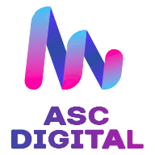
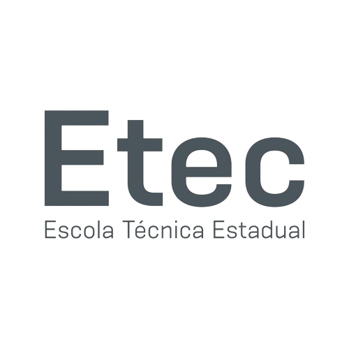

Academic

About Me
Bringing solutions through technology.
• 4+ year experience
• Graduating in Information Systems at USP.
• Microservices Architecture and AWS/Azure DevOps
• Advanced English Level

• 4+ year experience
• Graduating in Information Systems at USP.
• Microservices Architecture and AWS/Azure DevOps
• Advanced English Level
Academic
Bachelor Degree in Information Systems at ICMC

Technical Degree in Systems Development
Professional
At Majors Asset, an Investment Fund Manager with a Startup and Technology DNA focused on FIDC for Consigned Credit and FGTS, my responsibility lies in negotiating credit rights assignments (CCB's), validating eligibility criteria, collateral, and registration for 100% of the assets, in addition to their portfolio management.
Therefore, we use Docker microservices with Python, PostgreSQL, ClickHouse, SQS, Consumer, and Redis.
Furthermore, we integrate with various third-party services, such as the fund's accounts for viewing balances and statements with banks like Itaú and Qi Tech, as well as purchases, signatures, and transfers with DTVMs.
At Menestys Asset, I had the opportunity to combine two areas of interest: Technology and the Financial Market. I was responsible for developing two microservices in Python:
• To query the daily value of post-fixed indices (DI, IPCA, and IGPM).
• To manage the negotiation of fund shares (FIC FIDC) and national treasury bonds (LFT).
The experience taught me a lot about handling diverse systems, integrations, and asynchronous process communication, using Amazon SQS messaging and Amazon ECS for Docker container orchestration.
ASC Digital was a Software House founded by me, focusing on the development of Enterprise Resource Planning (ERP) systems for various clients across different economic sectors, including:
• Executa Trade Marketing: Financial Management System integrating with Bradesco Bank via FEBRABAN CNAB 240.
• Dealercont: Sales and Commission Management System.
• Wise RH: Human Resources Management System.
• DPA Brasil Nestlé: CRM and Document Management System.
• DNA Cidadania: Document and Genealogical Tree Management System.
During this period, my contact with diverse systems and technologies boosted my knowledge and professional development, such as:
• Developing software projects using monolithic and microservices architectures, with integrated deployment on clouds like AWS and Azure, and Internet Information Services (IIS), always adhering to clean code architecture and CI/CD deployment.
• Modeling databases in PostgreSQL, MySQL, and SQL Server, always using database versioning via Migrations to meet business rules.
• Full-stack development of Webapps:
- Web APIs in Python, C# .NET 8, and Java Spring Boot, always ensuring security with JWT for Authentication and Authorization.
- Front End using React JS, Blazor, Stencil & Ionic, Angular, and other frameworks.
My first contact with systems in the job market, I worked on several projects such as:
• Maintenance and development of new features in the Android Mobile application (Kotlin).
• Development of an internal SDK in Python for pattern recognition in images (Car Plates and Human Faces).
• Development of a Windows desktop system using C#, utilizing Asterisk VOIP communication.
A Junior Enterprise at the Institute of Mathematical and Computer Sciences (ICMC) of USP São Carlos, with over 30 years of market presence and a reference in computing and statistics projects.
I worked on the Legal and Financial team, being responsible for the accounting area.
Main functions:
• Structuring of cash flow, assets, and liabilities.
• Construction of Income Statements (DREs).
What I am Good In


Adriano Carvalho © 2025.
All rights reserved.